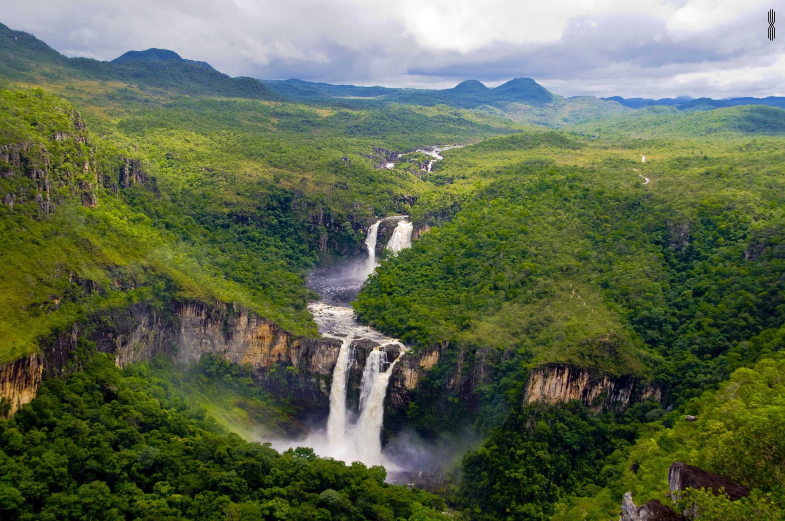
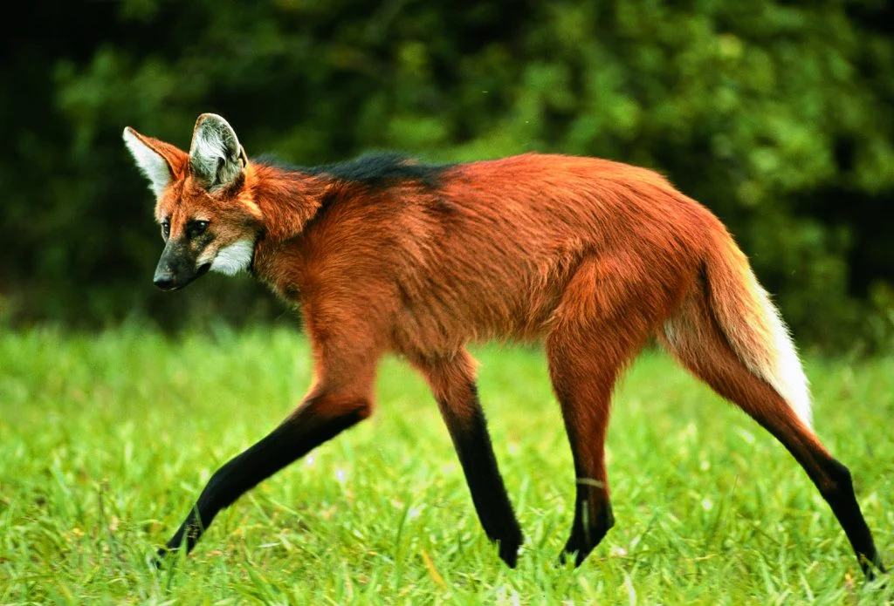
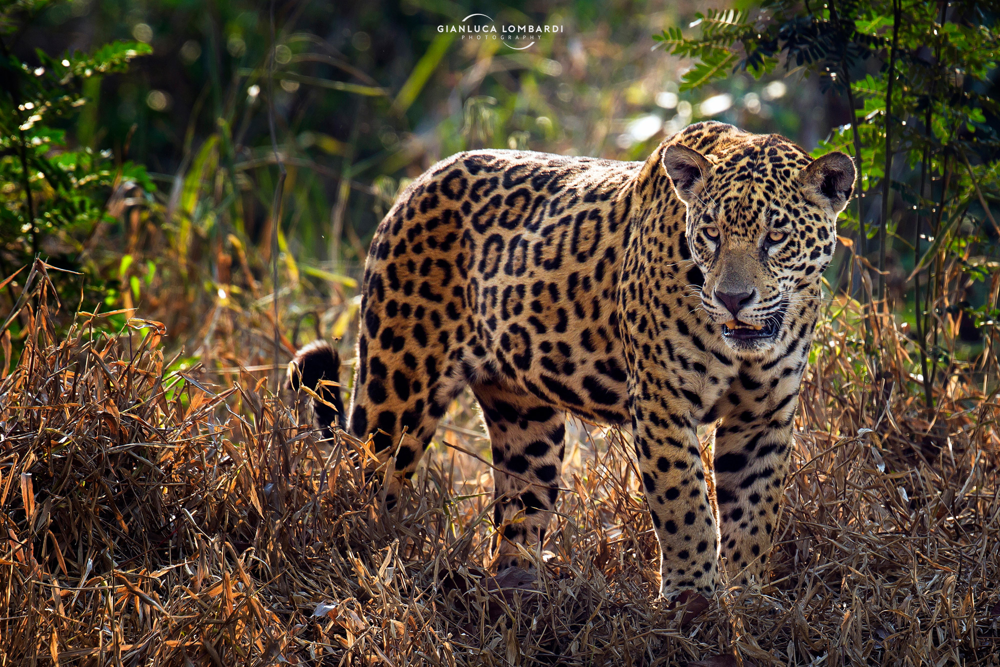
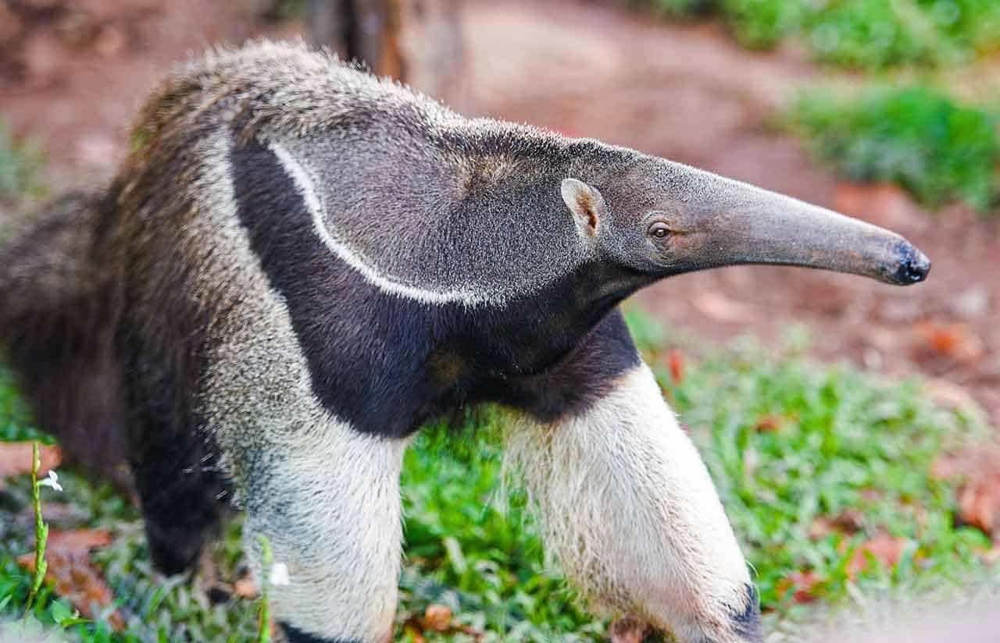

Temos Biodiversidade aqui!!

Parque Nacional da Chapada dos Veadeiros: Localizado no nordeste de Goiás, esse parque é um dos mais importantes do Brasil para a conservação do Cerrado. É lar de diversas espécies ameaçadas, como o lobo-guará, a onça-pintada e o tamanduá-bandeira.



O Parque Nacional da Chapada dos Veadeiros, localizado no nordeste de Goiás, é um tesouro natural do Brasil. Famoso por suas paisagens deslumbrantes, o parque abriga cachoeiras impressionantes como as do Rio Preto e de Santa Bárbara, além de formações rochosas antigas. A biodiversidade é notável, com espécies ameaçadas como o lobo-guará e a onça-pintada, e vegetação rica em plantas endêmicas como o pequi. Oferece diversas trilhas e atividades de aventura, e sua energia mística atrai aqueles interessados em meditação. Reconhecido como Patrimônio Mundial pela UNESCO em 2001, o parque também é ideal para observação de estrelas devido ao céu limpo e à baixa poluição luminosa.